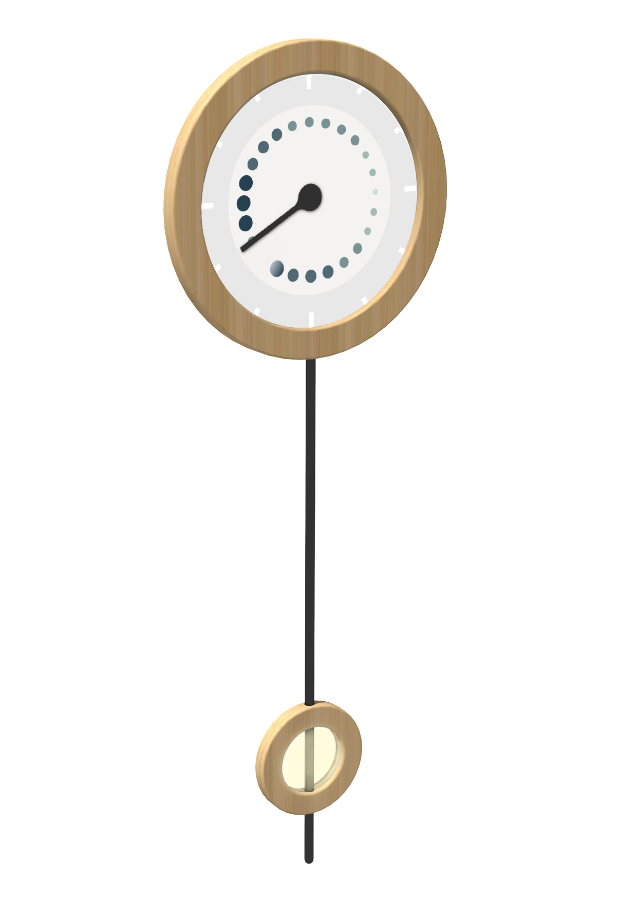
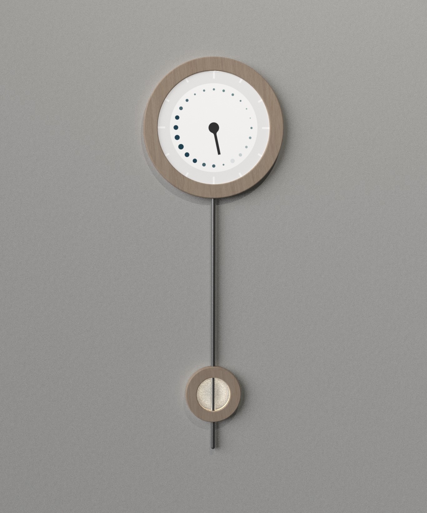

An energy clock
Type: Group work
When: 2022
Duration: Ten weeks
Project scope: Bachelor thesis
This bachelor's thesis project focused on developing a digi-physical product for visualizing household energy consumption. The objective was to create a product capable of reducing energy consumption while being norm-creative and challenging traditional gender roles within households. The project was conducted in collaboration with the product design studio Boid.


Norm-creative
The project included creating a gender-inclusive solution, requiring detailed exploration to pinpoint the essential factors for crafting such a design, particularly considering the influence of societal gender stereotypes in design. A mood board was made to help envision the desired expression.
The process
One concept that emerged during the project was POWER, an energy clock. The screensaver represents an analog clock that becomes a natural part of the interior design.



The interface
The digital interface consists mainly of four pages, one acting as a screensaver. This screensaver forecasts better and worse times to consume electricity for the next twelve hours. The prediction is depicted in a format resembling a clock face, featuring a scale of dots in varying sizes. Smaller dots represent favorable times for consumption, while larger dots denote less favorable times. The remaining three pages of the interface present various information. An activity page displays an overview of immediate household consumption, allowing users to deactivate activities that do not benefit the entire household. A consumption history page shows data from the past 24 hours or weeks. Lastly, a weekly summary page provides insights on previous consumption and tips for improving electricity usage.

Prototyping
During the project, a high-fidelity prototype was constructed for user evaluation to simulate the real-life experience of living with the product. Therefore, the prototype was functional and designed to closely resemble the final product in aesthetics.


The result
The project resulted in the concept called POWER. POWER is a household energy planning and management product designed for all household members. It primarily features a central interface comprising two components: a circular touch screen housing a digital interface and a metal bar with a wooden ring that moves vertically along the bar. The ring ascends when household electricity consumption increases and sinks when it decreases.


A poster
An explanatory poster was designed to communicate the product and its features effectively. To highlight the collaboration between the project team, BOID, and the broader initiative led by the International Energy Agency, the colors of these companies were incorporated into the design.